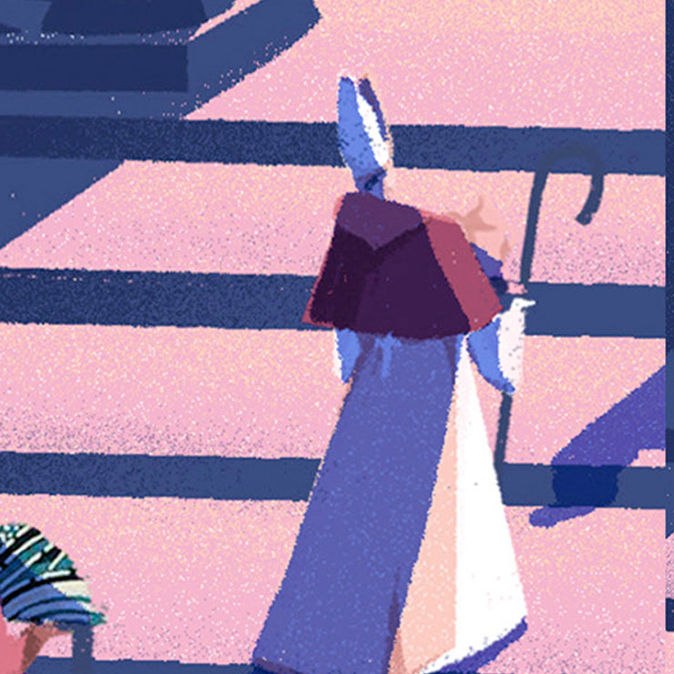
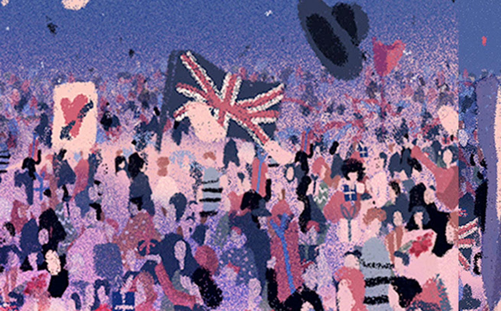
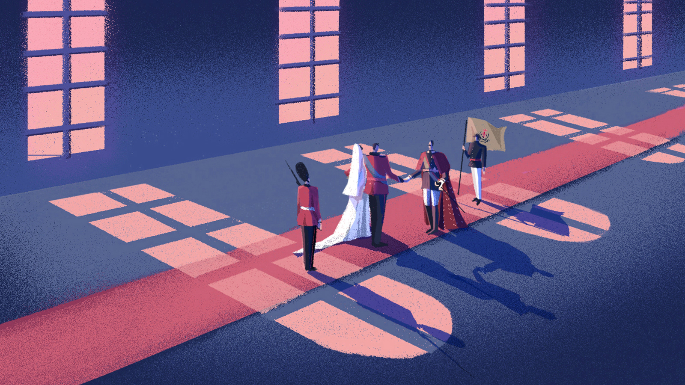
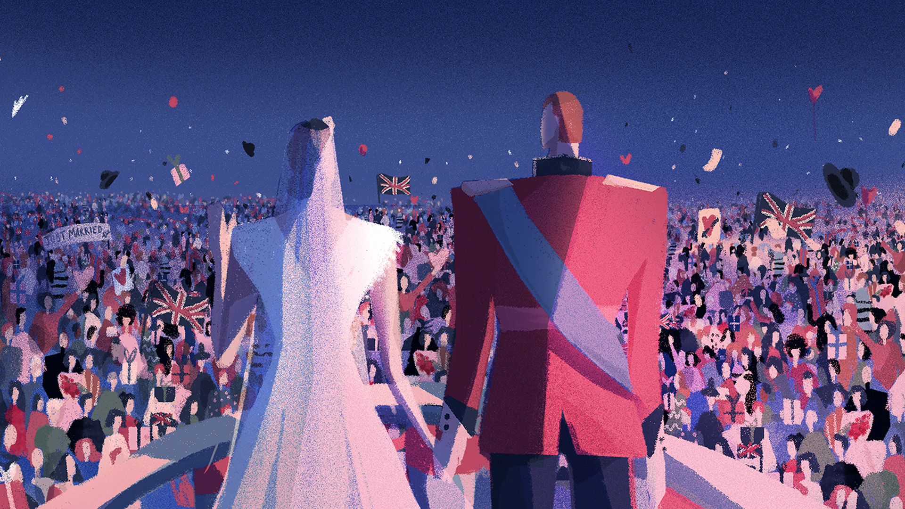
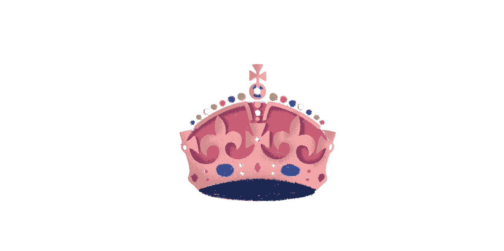

Royal Gifts
Client
CNN
year
2015-2016
What I did
Art direction, Design, Illustration


Stationary
이 프로젝트는 CNN의 뉴스에 들어가는 기사 이미지를 시각적으로 표현한 프로젝트입니다. 디자인 컨셉과 일러스트레이션을 진행하였고 총 3개월의 기간동안 진행되었습니다. 현대적인 감각에 맞춘 일러스트를 제작하기 위하여 트렌드서치와 무드보드 작업을 CNN팀과 함께 진행하였습니다.




Thanks!
* 여기서 사용된 모든 이미지의 저작권은 이미지 제작자인 Marianna Tomaselli에게 있습니다.